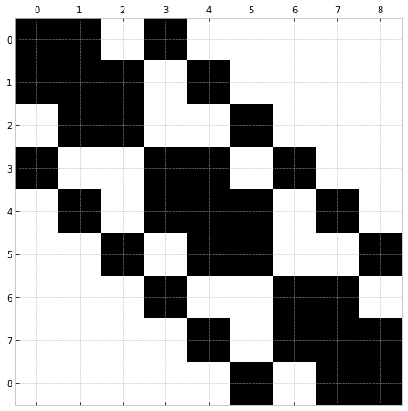
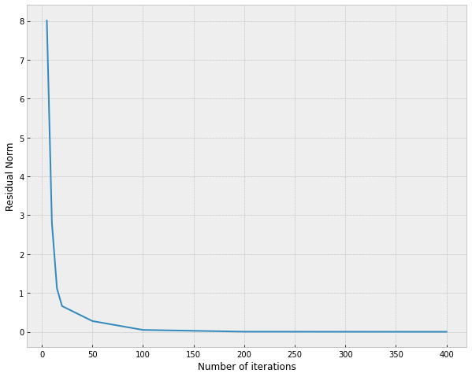

Exploring Trilinos with Python - Epetra and AztecOO
Introduction
This is an example from PyTrilinos tutorial with a more detailed and exploratory approach with steps outputs to help understand the program functionalities and dataflows. Trilinos/exAztecOO.py.in at master · trilinos/Trilinos · GitHub.
The problem involves solving a linear system $Ax=b$ derived from discretization of the Laplace partial differential equation.
This exploratory example was run using emacs org-mode with jupyter-emacs package. I am using python version:
python --versionPython 3.8.5
Preliminaries
from PyTrilinos import Epetra, Galeri, AztecOO, version
print(version())
import matplotlib.pyplot as plt
plt.style.use('bmh')
import numpy as npTrilinos version: 13.1 PyTrilinos version: 12.13
Construct the problem
We need the matrix $A$ and vector $b$, right hand side (RHS), of our problem.
Communicator
The Epetra communicator object encapsulates information and services for other Epetra classes to run on serial or parallel computer.
It contains information required to construct a map object which is required for all other Epetra classes.
comm = Epetra.PyComm() # Epetra communicator
print(comm)
print(comm.MyPID.__doc__)
::Processor 0 of 1 total processors.
Return my process ID. In MPI mode returns the rank of the calling process. In serial mode
returns 0.
Map
The map is a distribution of integer labels across processes.
This object encapsulates information to help in parallel solvers.
It contains global number of elements, local number of elements and global numbering of local elements.
Here the Galeri package creates a map however there are other ways to create it.
The linear map subdivides elements of the map linearly among the available processes.
nx, ny = 3, 3 # problem size nx x ny nodes in Cartesian 2D
galeri_params = {'n': nx * ny,
'nx': nx,
'ny': ny}
map = Galeri.CreateMap('Linear', comm, galeri_params)
print(map)
Number of Global Elements = 9
Number of Global Points = 9
Maximum of all GIDs = 8
Minimum of all GIDs = 0
Index Base = 0
Constant Element Size = 1
Number of Local Elements = 9
Number of Local Points = 9
Maximum of my GIDs = 8
Minimum of my GIDs = 0
MyPID Local Index Global Index
0 0 0
0 1 1
0 2 2
0 3 3
0 4 4
0 5 5
0 6 6
0 7 7
0 8 8
$A$ matrix
The matrix of our linear system comes from discretization of Laplace equation in 2D.
Fortunately, Trilinos comes with a package that has function that we can use to create example matrices and vectors, the package is Galeri.
A = Galeri.CreateCrsMatrix('Laplace2D', map, galeri_params)
print(A)
Number of Global Rows = 9
Number of Global Cols = 9
Number of Global Diagonals = 9
Number of Global Nonzeros = 33
Global Maximum Num Entries = 5
Number of My Rows = 9
Number of My Cols = 9
Number of My Diagonals = 9
Number of My Nonzeros = 33
My Maximum Num Entries = 5
Processor Row Index Col Index Value
0 0 0 4
0 0 1 -1
0 0 3 -1
0 1 0 -1
0 1 1 4
0 1 2 -1
0 1 4 -1
0 2 1 -1
0 2 2 4
0 2 5 -1
0 3 0 -1
0 3 3 4
0 3 4 -1
0 3 6 -1
0 4 1 -1
0 4 3 -1
0 4 4 4
0 4 5 -1
0 4 7 -1
0 5 2 -1
0 5 4 -1
0 5 5 4
0 5 8 -1
0 6 3 -1
0 6 6 4
0 6 7 -1
0 7 4 -1
0 7 6 -1
0 7 7 4
0 7 8 -1
0 8 5 -1
0 8 7 -1
0 8 8 4
Visualization of $A$ sparse matrix
We can visualize the sparse matrix by putting it back the condensed rows into a 2d numpy array.
print(A.ExtractGlobalRowCopy.__doc__)
n_row, n_col = A.NumGlobalRows(), A.NumGlobalCols()
A_sparse = np.zeros((n_row, n_col))
for row in range(n_row):
value, col_id = A.ExtractGlobalRowCopy(row)
for v, col in zip(value, col_id):
A_sparse[row, col] = v
fig, ax = plt.subplots(figsize=(8,8))
ax.spy(A_sparse)
ExtractGlobalRowCopy(self, int globalRow) -> (numpy.ndarray,numpy.ndarray)
Returns a two-tuple of numpy arrays of the same size; the first is
an array of integers that represent the nonzero columns on the
matrix; the second is an array of doubles that represent the values
of the matrix entries. The input argument is a global row index.

$b$ RHS vector
Create b vector with same map that determined the layout of matrix rows and fill it with random values.
b = Epetra.Vector(map)
b.Random()
print(b)[ 0.14609411 -0.59633352 -0.57747566 0.36649935 -0.24548529 0.12870635 -0.83239817 -0.11602075 0.03932 ]
$x$ solution vector
x = Epetra.Vector(map)
x.PutScalar(0.0)
print(x)[0. 0. 0. 0. 0. 0. 0. 0. 0.]
Solver
AztecOO solver object
For solving the system $AX=b$ we need to create a solver object from AztecOO package which is also names AztecOO.
This object takes Epetra matrix and vectors objects but it could also be constructed with a "linea problem instance" also from Epetra.
solver = AztecOO.AztecOO(A, x, b)
print(solver.__doc__)
print(dir(solver))
AztecOO: An object-oriented wrapper for Aztec. Currently it accepts a Petra matrix, initial guess and RHS as
separate arguments, or alternatively, accepts a Epetra_LinearProblem.
If constructed using a Epetra_LinearProblem, AztecOO will infer some
solver/preconditioner, etc., options and parameters. Users may override
these choices and manually choose from among the full set of Aztec options
using the SetAztecOption() and SetAztecParam() functions.
AztecOO will solve a linear systems of equations: :math:`AX=B`, using Epetra
objects and the Aztec solver library, where :math:`A` is an Epetra_Operator or Epetra_RowMatrix (note
that the Epetra_Operator class is a base class for Epetra_RowMatrix so that Epetra_RowMatrix *isa*
Epetra_Operator.) :math:`X` and :math:`B` are Epetra_MultiVector objects.
Warning: AztecOO does not presently support solution of more than one simultaneous right-hand-side.
['AdaptiveIterate', 'CheckInput', 'Condest', 'ConstructPreconditioner', 'DestroyPreconditioner', 'GetAllAztecOptions', 'GetAllAztecParams', 'GetAztecOption', 'GetAztecStatus', 'GetLHS', 'GetLabel', 'GetPrecMatrix', 'GetPrecOperator', 'GetProblem', 'GetRHS', 'GetUserMatrix', 'GetUserOperator', 'Iterate', 'NumIters', 'PrintLinearSystem', 'RecursiveResidual', 'ScaledResidual', 'SetAdaptiveParams', 'SetAllAztecOptions', 'SetAllAztecParams', 'SetAztecDefaults', 'SetAztecOption', 'SetAztecParam', 'SetErrorStream', 'SetLHS', 'SetLabel', 'SetMatrixName', 'SetOutputStream', 'SetParameters', 'SetPrecMatrix', 'SetPrecOperator', 'SetPreconditioner', 'SetProblem', 'SetRHS', 'SetScaling', 'SetStatusTest', 'SetUseAdaptiveDefaultsTrue', 'SetUserMatrix', 'SetUserOperator', 'SolveTime', 'TrueResidual', 'UnsetLHSRHS', '__class__', '__delattr__', '__dict__', '__dir__', '__doc__', '__eq__', '__format__', '__ge__', '__getattribute__', '__gt__', '__hash__', '__init__', '__init_subclass__', '__le__', '__lt__', '__module__', '__ne__', '__new__', '__reduce__', '__reduce_ex__', '__repr__', '__setattr__', '__sizeof__', '__str__', '__subclasshook__', '__swig_destroy__', '__weakref__', 'recursiveIterate', 'this', 'thisown']
Solver options
The default AztecOO options are:
-
solution algorithm:
AZ_GMRESgeneralized minimal residual -
preconditioner:
AZ_noneno preconditioner in the default -
residual expression for convergence check:
AZ_r0$||r||_2 / ||r^{(0)}||_2$
print(solver.GetAllAztecOptions())[ 1 0 0 0 1 1 500 1 0 0 30 0 0 1 0 0 0 0 9 1 0 0 0 0 0 1 -4 0 0 0 0 0 0 0 0 0 0 0 0 0 0 0 0 0 0 0 0]
Solver parameters
print(solver.CheckInput.__doc__)
print(solver.CheckInput())Prints a summary of solver parameters, performs simple sanity checks. 0
Solving the system
The method Iterate is modifies the solution stored in the variable x every time it runs.
This method takes the maximum number of iterations and tolerance.
x.PutScalar(0.0)
solver.Iterate(2, 1e-5) # number of max iterations and tolerance
print('solution: ', x)
exact = np.linalg.inv(A_sparse) @ b
print('exact soluction: ', exact)
error = x - exact
print('error norm: ', error.Norm2())
Ax = Epetra.Vector(map)
A.Multiply(False, x, Ax)
residual = b - Ax
print('residual: ', residual)
print('residual norm: ', residual.Norm2(), type(residual))solution: [ 0.02680169 -0.19547903 -0.17928597 0.04830349 -0.07719315 -0.00736351 -0.20915358 -0.0863673 0.01118655] exact soluction: [-0.0374102 -0.26552884 -0.23264235 -0.03020605 -0.19572929 -0.08756488 -0.25418408 -0.15413209 -0.05059424] error norm: [0.2212703] residual: [-0.10828818 -0.04409484 -0.06317433 -0.08625965 -0.17761903 -0.0871322 -0.03384767 -0.04571172 -0.09915699] residual norm: [0.27804727] <class 'PyTrilinos.Epetra.Vector'>
Convergence analysis
After experimenting with the libraries, let's try do some experiments.
Problem definition
def problem_setup(size):
comm = Epetra.PyComm() # Epetra communicator
nx, ny = size, size
galeri_params = {'n': nx * ny,
'nx': nx,
'ny': ny}
map = Galeri.CreateMap('Linear', comm, galeri_params)
A = Galeri.CreateCrsMatrix('Laplace2D', map, galeri_params)
b = Epetra.Vector(map)
b.Random()
x = Epetra.Vector(map)
x.PutScalar(0.0)
return A, x, b, mapSolver routine
def solver_routine(A, x, b, num_iter, map):
solver = AztecOO.AztecOO(A, x, b)
solver.Iterate(num_iter, 1e-5) # number of max iterations and tolerance
Ax = Epetra.Vector(map)
A.Multiply(False, x, Ax)
residual = b - Ax
return residual.Norm2()[0]Analysis
A, x, b, map = problem_setup(100)
residual = []
num_iter = [5, 10, 15, 20, 50, 100, 200, 400]
for ni in num_iter:
residual.append(solver_routine(A, x, b, ni, map))Visualizing
plt.figure(figsize=(10,8))
plt.plot(num_iter, residual)
plt.xlabel('Number of iterations')
plt.ylabel('Residual Norm')